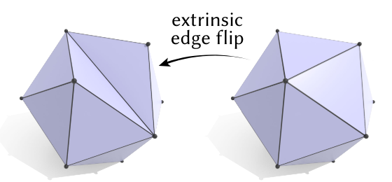
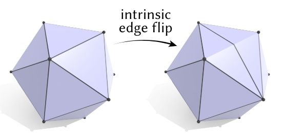
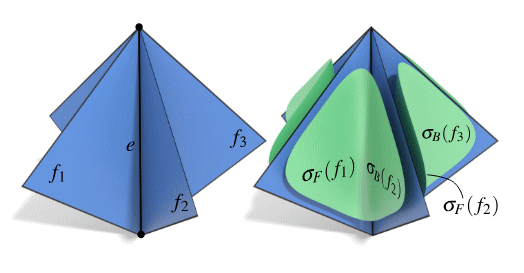

参考：
Geometry Processing with Intrinsic Triangulations
Navigating Intrinsic Triangulations
A Laplacian for Nonmanifold Triangle Meshes
容易实现，效果还好，太帅了。
Delaunay Triangulation
所谓Delaunay triangulation，是指对triangulation（三角剖分）中的任意一个三角形，其外接圆内都不包含任何以外的顶点。当然，这里的上下文是二维平面上的triangulation。
这个定义最为常见，但不便于计算，来看另一个等价的定义。对相邻的三角形，如果有：
就称边BC满足Delaunay condition。如果triangulation中所有的非边界边都满足此条件，则称它是一个Delaunay triangulation。
给定任意triangulation，可以通过以下算法在不改变形状和顶点位置的前提下将其转换为一个Delaunay triangulation：
while there exists an edge e that doesn't satisfy the Delaunay condition:
let ABC and BCD be the triangles containing e
replace edge BC with AD # this is called 'edge flip'考虑把全体三角形的内角值进行非降序排序得到的向量，以及这些向量之间由词法序定义的全序关系。在上述算法的每次迭代中，triangulation的内角向量单调递增，故此算法必然可以停机。由停机条件可知最终得到的是一个Delaunay triangulation。
Intrinsic Triangulation
在二维情形下，edge flip只会改变内部的connectivity，不会改变geometry。但三维情形下就不一样了，当某条边两侧的三角形不共面时，这条边代表了一个实实在在的几何特征。如果还是遵照上面的算法，肆意使用edge flip，就会改变几何形状：

这归根到底是因为顶点之间的connectivity和geometry之间耦合了。那如果我们强行让它们解耦，允许connectivity edge和geometry edge不一致，就会变成这样：

这毫无疑问破坏了triangulation原本和geometry之间的一致性，这种不一致会导致本来正确的算法变得错误。
有没有什么属性是在这种不一致下得以被保留的呢？如果要计算的量是“intrinsic property”，只依赖于“仍然正确的部分”，那么这些算法就可以继续在这种离谱的triangulation上运行。
事实上，测地距离不受intrinsic edge flip的影响。用测地距离衡量长度（进而可以用内角表示方向），足以构建出一大堆算法了。最典型的莫过于Laplace Beltram算子，基于新triangulation构造的Laplace matrix仍然是一个的矩阵，用法和老版本一样，区别则是它是基于Delaunay triangulation构造的，其中所有的非对角元素都非负，鲁棒性远超旧版。
需要注意的是，在intrinsic triangulation的语境下，我们只能保存和使用那些“正确”的量，譬如内角和边长。这里的“边”也不能理解成顶点间的直线段，而是intrinsic edge，它在geometry上很可能对应了一条折线。
Tufted Triangulation
Triangle mesh某种意义上是一个“壳”，或者说只有当它像个壳时，很多计算才有意义，不像壳的triangle mesh（比如有non-manifold edge，或者像莫比乌斯环那样不是orientable）则常常被各种算法拒绝。
在遇到non-manifold edge时，如果我们赋予壳一个无限小的厚度，把它进行一个connectivity意义下的挤出操作，就能得到一个合理的triangulation了。

类似的操作也可以用在boundary edge上，想象我们可以越过boundary，跑到mesh的另一侧去，给另一侧也构建对应的triangulation，它和原本的triangulation在boundary edge处连在一起。如此一来，我们获得了对boundary edge做intrinsic edge flip的能力，可以进一步提高很多算法的鲁棒性。